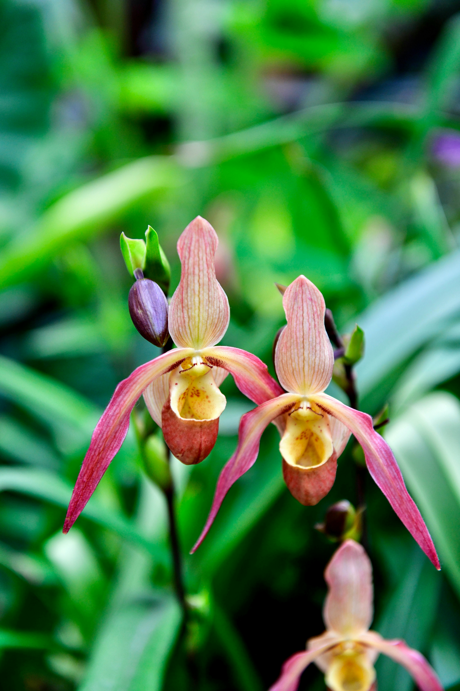
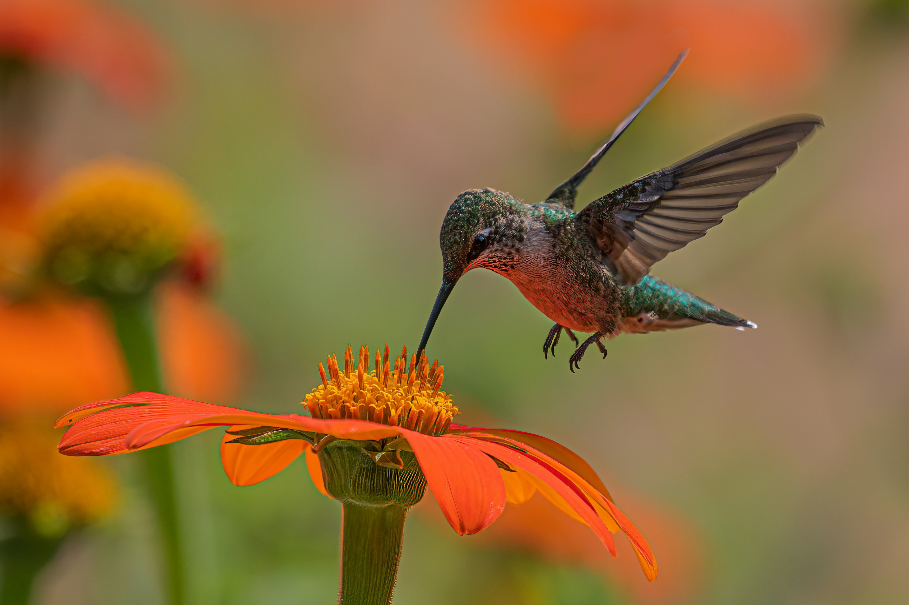

📷 Galería fotográfica
Imágenes de la flora, fauna y paisajes de la Reserva La Romera y sus municipios custodios.




🎥 Video: La Reserva La Romera
Conoce de cerca los paisajes, flora y fauna de la Reserva La Romera a través de este recorrido visual.
✕